How it works.
We are consciousness.
As consciousness we travel from one frozen reality to another one. Over and over. These frozen realities are known as world-lines.
Time is our perception of this movement.
Now, consciousness can be in two forms.
The forms are WAVE, and PARTICLE.
When the consciousness is outside the physical body, it is in the WAVE form.
When the consciousness is inside a physical body, it is in PARTICLE FORM.
Thus, the consciousness is constantly following a sine path switching back and forth between WAVE and PARTICLE states.
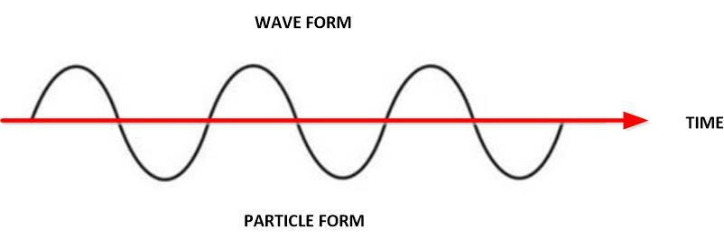
The only thing that consciousness can do in the WAVE FORM is think.
The only thing that it can do in the PARTICLE FORM is operate a body.
Thus we have the dualistic nature of consciousness.
You must think “outside the box”; the physical body, and then apply those actions to make physical reality changes happen.
Thinking Navigates our reality
Well, look at it this way. Our reality changes and molds to what we think. I covered this over and over before in other posts. Time is the movement of our consciousness as it moves in and out of world-lines.
And, of course, what we think thus changes our reality.
Because our thoughts determine what world-lines we enter into. So if we are thinking wonderful thoughts, and are calm, and direct our energy into wonderful things, our life would be wonderful.

Movement through the different world lines appears as time. As we think, we select the world lines to migrate towards. We need to control and master our thoughts.
.
But if we surround ourselves with negative thoughts, manipulative news, and people. If we are reacting to events instead of manifesting them, or if we hold grudges and evil negative thoughts… then our world experiences will become progressively darker and darker.
Thoughts generate memories.
Memories shape our thoughts.
Thus, our prior experiences shape the thoughts that we have. So they are crucially important to the creation of our life and our reality.
Thoughts create memories. Our memories influence how we think and what we think about. Our thoughts are influenced by our memories and the environment in our reality. So in order to overcome your immediate environment, you must overcome that influence and generate new and healthy thoughts.
It’s like this…
A poverty stricken beggar might yearn for a reality where he has a warm meal and a roof over his head from the rain. While a wealthy oligarch might yearn for forbidden activities, and serendipitous pursuits.
Why the difference?
It’s because of their experiences. And their experiences are molded by their memories which is a record of their reality.
Why are memories important?
Memories are important because they attract and repel quanta. You want a balanced mixture of good and bad memories so that the attractions are balanced.
That is how soul grows don’t you know.
The consciousness enters world-lines (via the MWI) and has experiences. These experiences are recorded as memories. These memories influence your actions and also power “The Law of Attraction” (for lack of a better term.)
Your realities are created by directed thoughts.
PLEASE SHUT OFF THE NEWS NOW. Do not allow the thoughts and actions of others to influence you, or cause you to live in fear.

Operate off your very own memories and your very own experiences.
Eventually, memories influence your thoughts in such a way that your sentience becomes defined. And we do want that, don’t you know. We want our sentience to be defined.
The brain does not record memories.
Firstly the brain does not record memories. Instead, it accesses them.
Memories reside outside any given reality and “world-line”.
Which is currently at odds with “modern” medical science. Pull up any internet article and they will point to specific regions in the brain where memories are “stored”.
- How Our Brains Make Memories | Science
- Where are memories stored in the brain?
- Memory and the Brain | Boundless Psychology
- The human memory—facts and information
- Your Brain Doesn’t Contain Memories. It Is Memories | WIRED
- Memory & The Brain | Where Is It Stored & How Is It Used?
- How Are Memories Stored in the Brain? | Live Science
- Parts of the Brain Involved with Memory
Sorry, but nope.

Those are the regions and areas inside the brain that accesses memories. they do not store them.
To use internet technology here…
Conventional Medical science Memories are recorded and goes directly into the brain "Hard Drive". As you get older more and more memories are packed inside of the "hard Drive". MAJestic understanding Memories are accessed from the cloud via a Wifi router. It collects the memories in "packets" and puts them in ROM / RAM for immediate use.
So instead of thinking of your brain as a big old hard-drive. You need to start thinking of it as a wifi router that accesses memories in the cloud.
Navigation of World-line travel is not for the faint of heart.
We naturally, as a living being on this planet, conduct world-line travel. Every moment, of every day, roughly 244 times a minute we move in and out of new realities.
Most humans operate at around 4 Hz. That is the speed at which we process a given reality. This speed changes under all sorts of conditions.
We view this progression; this movement from one reality to another as an “arrow of time”.
The problem is that we don’t view it as anything but “the way the universe is”. We wrongly and incorrectly view it as beyond our control. We think that time is fixed and immutable. As such we use it, as a clock, for all purposes related to physics and dynamics.
So, everyone naturally conducts world-line travel.
However, they do so without navigation. They do so without planning, a map or any sort of objective. They just wonder about, and let the surrounding reality affect their thoughts. They let their thoughts be their own thoughts, totally and completely oblivious to the fact that the thoughts are HOW you navigate to new realities.
But, take special note, everything outside our consciousness is not fixed. Is is all subject to change. The ONLY thing that is fixed is our consciousness.
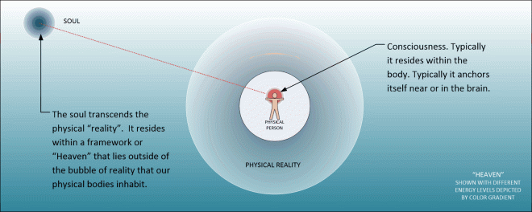
Now, here is the kicker.
To obtain the reality that we want to inhabit (whatever that might be). We need to map out a plan to get there. We need to navigate our consciousness in and out of adjacent realities so that eventually we will arrive at our ultimate destination(s).
Fundamentals
Thus, to be able to do this, we need to control two (2x) things…
- A map, plan, or schedule of where we want to go.
- Mastery of our thoughts.
[1] Planning – A Map
The first thing we need to talk about and address is planning.
In the Matrix, Cypher simply wanted to be reinserted in a completely new reality. It can be manifested using the techniques listed here.
Let’s talk about this.
I don't want to remember nothing. Nothing. You understand? [pause] And I want to be rich. You know, someone important, like an actor.
We will use the Cypher character from the movie “The Matrix” to illustrate. In the movie, he had a general idea of what he wanted. He had a target that they wanted. He wanted to be rich, and successful. He wanted to be respected, have a lot of fun, and not need to worry about too much. He wanted the life of a Hollywood director. He wanted the wealth, prestige, and the casting couch. That was his goal.
But… how to arrive there?
In the movie, he had a steak dinner with an agent of the reality. (A Mr. Smith.) He negotiated with them. He promised to take some action, and in reward, we would be given a new life within a new reality.
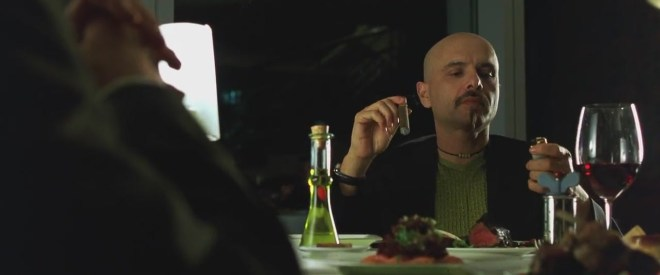
.
In the movie, it is very simple. You promise “A”, and in exchange you will get “B”.
In the movie, Cypher promised to capture (or kill, I’m not sure which it was) the main character Neo. In exchange, the “angel of change”, a Mr. Smith would give him a new reality where he would have a new life as a Movie Director.
Cypher knew he could do this because he knew what the Matrix really was. He knew that everything was an illusion. Yet, his consciousness and his body treated that illusion as a reality. He wanted to taste the steak and chew it in his mouth. He wanted to drink the wine and smoke the fine cigar. He wanted to use that knowledge to garner a far better life for himself.
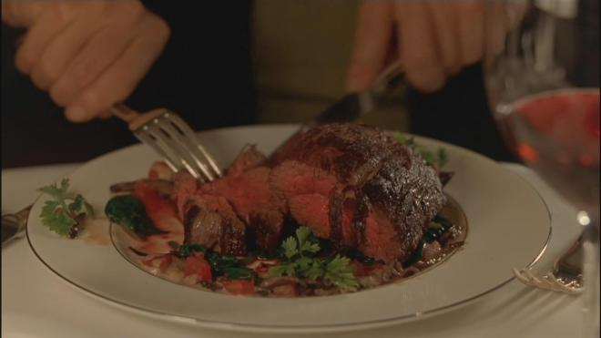
The first thing that you need to do is plan.
You need to have a “map” that describes exactly what you want in your life. This can be a lot of fun, but I must urge caution. Manifesting thoughts can also manifest all sorts of unintended consequences.
It has been my experience that what is pictured in Hollywood is often nothing that represents real life. No matter how good they try to provide that image, it’s just not the way things work.
Unless you are careful, the reality that you manifest can bring with it all sorts of other issues and problems.

.
Thus you do need to be very careful in the specifying of your ultimate world-line destinations.
“Sometimes when you win, you really lose. Sometimes when you lose, you really win. Sometimes when you win, you really tie. And, sometimes when you tie, you really win or lose.”
White Men Can’t Jump – Rosie Perez (Gloria Clemente) Gloria was trying to get her boyfriend to see that every action that you take affects someone or something else.
Some results are obvious and intended, but occasionally they have negative, unintended affects too.
Her boyfriend had lost substantial amounts of money playing basketball, despite being great at it.
He finally came through on his promise to win money in the game, but found her gone when he came home. He won the game, but lost his girl.
You can yell at your boss in staff meetings, sleep with his wife on his desk, and pee on the carpet in his office, but you probably will not keep your job.
So, unless you are waiting on a hefty inheritance, you should thoroughly think through the repercussions of your behavior before you do anything.
Sometimes, your first instinct is not the best one. -Answers from Men
I have found that it is far easier for me to describe things using diagrams.
Here, in this first diagram, we see how a normal person (just living life normally) experiences time.

.
There is no such thing as time. What there is, instead, is an infinite number of parallel universes, and we humans go in and out of each one at a rate of about 144 different universes a minute. Roughly.
.
So for a person starting at a clock at 0, and then counting down to a clock saying 1 second, we would have passed through various adjacent realities without even knowing what we were doing.
Typically that number is around 4 world-lines every second. It’s slightly faster or slower for different people, at different times.
Now, that you know what “time” is, you can now understand that the “passage of time” is you passing in and out…
…through…
…all sorts of adjacent world-line realities.
The Matrix is a system, Neo. That system is our enemy. But when you're inside, you look around, what do you see? Businessmen, teachers, lawyers, carpenters. The very minds of the people we are trying to save. But until we do, these people are still a part of that system and that makes them our enemy. You have to understand, most of these people are not ready to be unplugged. And many of them are so inured, so hopelessly dependent on the system, that they will fight to protect it. — Morpheus (Laurence Fishburne), The Matrix
Now, let’s talk about how to map out the passage of time to get you to a destination; a reality that you would prefer.
For instance, look at the following diagram.
- You are currently in world-line reality “A”. It is shown in a green color.
- You want to eventually have a new reality “B”. It is shown in a gold color.
- There are two paths marked out. One is yellow and one is black.
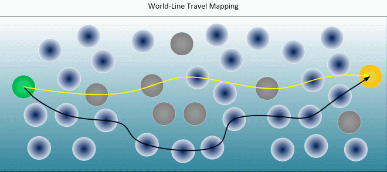
The yellow path is the most direct path. It will require fewer adjacent realities to pass through. The black path is the preferred path. It will take longer, because you will need to pass through more adjacent realities to get to it.
The reason that you want to take the black path over the yellow path is so that you can avoid those problematic realities. They are shown in grey.
These are realities that will cause you turmoil and distress that you do need to avoid if you truly want to have a great life. They include such things as car accidents, company layoffs, periods of hardship, medical bills, and death. You do want to avoid these realities.
You MUST plan.
You MUST visualize what you want.
If you do not, then you will not have any ideas or visualization of your desires, and the desires of others around you will determine what will happen to you. Don’t allow that to happen.
Thus, when planning, you need to absolutely make sure of a number of factors. These are;
- A destination lifestyle. Clear and easy to visualize. It must be very detailed. There must be no ambiguity in it what so ever.
- Incorporate elements that will guarantee avoidance of problematic adjacent realities.
Important note. No this is not walking into a dimensional-portal and going in and out different world-lines. Instead, this is using the knowledge that every fraction of a second 1/244 minute we move to a new reality as determined by our thoughts and the thoughts of those around us. This discusses how we "steer" our consciousness in and out of those realities to achieve our goals.
[2] Mastery of our thoughts.
“You have to let it all go, Neo. Fear, doubt, and disbelief. Free your mind.” The Matrix – Lawrence Fishburne (Morpheus) The only thing that can stop you from accomplishing everything that you have dreamed of, is you. Once you believe that something is possible, it becomes possible. Fear stunts our ability to succeed in our professional and personal lives. -Answers from Men
Thoughts alter our reality.
They do, and this isn’t just some kind of “new age” mumbo-jumbo. It is a fact, and if you can’t get your arms around this basic point, you need to go back to school and study Quantum Mechanics all over again.
- The strange link between the human mind and quantum physics.
- Quantum experiment in space confirms that reality is what you make it
- 5 Mind-Blowing Quantum Experiments
- Quantum Physics Explains How Your Thoughts Create Reality
- 8 Studies that Show How Consciousness Affects Reality
- Quantum Theory Demonstrated: Observation Affects Reality
- Part 1: Using Quantum Physics to…Manipulate Reality
- Thoughts Create Reality Dr. Emoto’s Scientific Experiments
- More Than One Reality Exists (in Quantum Physics)
- “Consciousness Creates Reality” – Physicists Admit
The primary key is navigating the map that we created in [part 1] above, this navigation is often difficult to do. That is because we need to be in control of our thoughts, and modern life will not permit that.
All that “fake news”, and every commercial you see, and all the thoughts by all the people around you affect YOUR thoughts.
Here is a screenshot of the morning news on 9JUN19. Wait two years and see just how relevant any of this is to your personal life. You will discover that none of these things really matter. They just don’t, yet these writings and news affects your thoughts. Turn them off. They are harming you.
.
If you want to become the master of your life, and obtain the end destination reality that you mapped out, you will need to turn off those bad thought-streams. Yes, and that means breaking some long-formed habits.
That daily dose of news first thing in the morning MUST END.
As I read the news I see a specter of a dark foe bent on creating a world that few of us want to see, one built out of fear and control. It’s even scarier because that foe wants you and I to think that it’s winning, so we will give up and it can win by default. Don’t. -Wilder Wealthy Wise
You must start to control the thoughts that go into the environment around you. If you cannot master that, you will never obtain the end goals that you have set for yourself.
The pre-birth world-line template
The most important thing that you must understand is that our consciousness is foreign to this universe.
Our consciousness did not evolve in THIS universe. It evolved in a different universe. Thus it is alien. It doesn't fit here. This universe is something that the consciousness USES for it's own purposes.
I know that that opens up a ton-load of questions. Answers to that and their implications are “above my pay grade”, but I do have some thoughts. I can cover them later on if you wish.
Our consciousness comes from soul.
Soul creates a smaller part of itself. This part is known as "consciousness" and it is used to travel outside of the "Heaven" universe.
Again. The “soul” does not exist here; in this (apparent) universe. The soul occupies an entirely separate universe. One which I refer to as “The Heaven Universe”.

The Soul creates a consciousness.
It ejects that consciousness into a “transport tube”; a kind of tunnel.
This tunnel is a mechanism for the consciousness to move from one universe to another.
Then the consciousness arrives in the “reality” universe.
Being foreign, there is really nothing that our consciousness is able to do in this “reality” universe. It is like water and oil. They just do not interact together well.

The only thing that our consciousness is able to do is generate thoughts. That is it.
Like a sun generates light, or how a flame creates sparks. The consciousness is able to create the same kinds of "stuff" that it is comprised of. This is what thoughts are. Thoughts are a form of the same kind of constructions as one's consciousness is.

And this reality universe (as I like to call it), consists of a near infinite number of fixed world-lines.
The "Heaven" universe is completely different from the "reality" universe. In fact, it is almost like the "reality" universe is an "artificial" construct of some type. The "reality" universe consists of an infinite number of static moments in time, or what I call "world-lines".

All that our soul can do, is inject our consciousness into a body.
Then, once the consciousness is there, the thoughts that the consciousness has navigates to the next world-line based on the highest-probability occurrence.
This highest-probability of occurrence is a pre-established vector that the consciousness follows independent of thought.
We call this the “world-line pre-birth template”.
It is the fated direction that your life will unfold towards as your consciousness rides the physical body life-time. It is critically important in what your life will present to you to experience. (At least that is what your very own soul expects.)

You could be an infant, brain-dead in a vegetative state, or mind dulled by drugs and abuse, but the vector path of the life that you will live will be following the pre-mapped out “pre-birth world-line template”.
It is the system that your soul establishes for your consciousness.
It is the way for your consciousness to obtain experiences.
How to navigate the world-lines
Well, thoughts are the ONLY thing that the consciousness can create.
And thoughts act like a magnet to the most similar world-lines. The thoughts form a “shape” or better yet, a “profile” that surrounds the consciousness. And the consciousness automatically moves towards the world-lines that match that profile.

This is a basic activity that describes MOVEMENT UPON the pre-birth world-line template.
But it does not describe movement off the pre-birth world-line template. That requires a different mechanism for movement. (A similar mechanism, but fundamentally different.)
So thoughts alone, without any further actions, can navigate upon the pre-birth world-line template. It is what is known as a “fated life”.
So if you rely on your thoughts alone to navigate, you will find that your life seems to be “fated”. That you might wish and yearn for things, but they never materialize. You might think about that nice guy or gal at the coffeehouse, but nothing will really manifest. Your life will just follow your pre-mapped out life.
Your thoughts might move you close to certain areas, but it won’t take you to where you want to go.

Movement off the Pre-Birth World-line Template
If this situation describes you…
That you think, wish and dream for things, but they never materialize. It seems that your life is fated to some degree.
Then, you are “trapped” following the pre-birth world-line template.
If you do not want to follow the fated life that has been provided to you, then you will need to incorporate additional measures to navigate the MWI. You will need to navigate off the pre-birth world-line template.
There are two main techniques to do so.
- Verbal Affirmations
- Slides
We are NOT a physical body. We are soul that manifests a consciousness within our reality.
Knowing and realizing this, makes some of the passages in the religious books far more reasonable, and easier to understand. It doesn’t matter if it is the Koran, or the Bible. Understanding the way the universe works, and truly works, adds a far greater understanding to the wisdom that resides inside of these great works.
The soul creates a “consciousness” that it places in a “container”. This container is a “world-line”. Our “universe” is a near infinite number of world-lines.
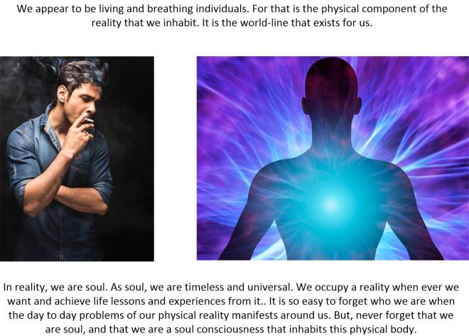
We are placed here for our consciousness to obtain experiences.
We navigate in and out of the world-lines though our thoughts. Our rate of travel (in general) is (for most humans) about 4 Hz. Or, four cycles per second. (Four world-lines each second.)
There are different rates of travel, and different species travel the MWI at different speeds. In general, the rate of travel is proportional to the operational speed of the brain. This of course varies. If you dull your brain to such a degree that your brain is slower, then you will not travel the MWI as fast as others would. And you might find your life slowly "falling behind" that of others.
Thus…
- We are consciousness. We “rent” a physical body for a fleeting moment of time.
- Our reality is NOT shared. Instead our consciousness occupies a singular world-line. It is a momentary event.
- We (our consciousness) migrate between momentary world-lines through our thoughts.
- This movement is known as “the arrow of time”.
The best way that I can introduce the reader to this “radical” understanding of how our universe actually works, is to use the “movie projector theory”.
Movie Projector theory for the MWI.
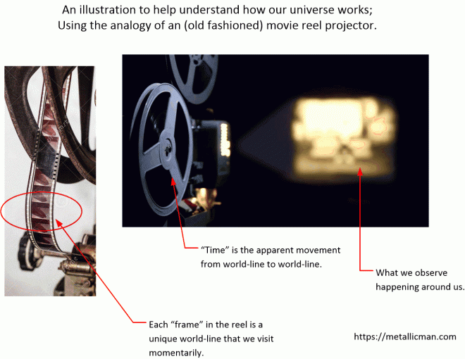
.
Thus, the idea of the actual way things work is really, really, REALLY different than what everyone assumes or believes. The difference is so stark, that many researchers are handicapped in their understanding of reality. Ah, but it need not be that way.
Come on!
You can well understand the movie projector analogy, can’t you?
If you can, well good for you! Award yourself a gold star.
The Movie Projector Theory in more detail…
The problem with that analogy (and it is a really good analogy), that that it does not take into account the individual frame selection in the film role. For in actual contemporaneous movies, it is the movie producer that selects the individual frames, and the person just sits back and watches the movie.
In reality, it is more like an entire bank of projectors, and we (as soul) selects the movie that interests us.
In this model, we have numerous movie projectors, all running simultaneously (at the same entropy)… Ah! At the same time.
We can “jump into” any scene portrayed by any of the movie projectors at will. We just look at the projected images.
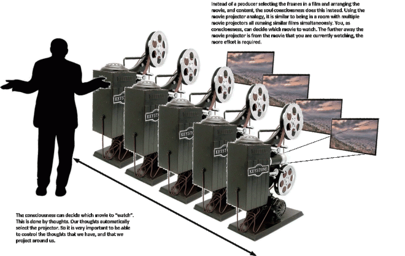
.
The further away the movie projector is from us, the harder it is to watch that movie. So we must watch closer movies (momentarily) and then “edge our way” closer to the movie projector that we are interested in.
Most people, sadly, do not do this.
They allow the movie projectors to operate randomly and they find themselves watching movies that they may not really care for.
How it manifests
So, using this film / movie projector analogy further it is exactly how our consciousness selects the “life experience” that we obtain. Each frame in a given movie reel is a world line. They are all playing about simultaneously, and our consciousness selects the world-lines to occupy by hopping from frame to frame. (World-line to world-line.)
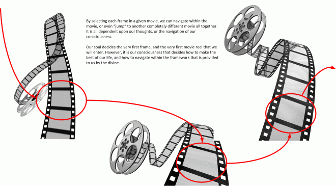
.
Our soul decides the very first frame, and the very first movie reel that we will enter. However, it is our consciousness that decides how to make the best of our life, and how to navigate within the framework that is provided to us by the divine.
Nearby movie projectors are nearly identical to the one that we are viewing at the moment. Their divergence from our “present reality” is often very small.
As we move further and further away to more distant movie projectors the divergence gets larger and larger and larger.
This is why it doesn’t seem like we are moving from one world-line to the next. It seems smooth, seamless and transparent. That is because the deviance in nearby world-line (projectors) is very, very small.
Our thoughts select the world-line…
In reality, the “film spool” (a collection of “frames”) is known as the “life experience” of a given consciousness as it takes on a life.
It is a record of our travels in and out of different world-lines. Where a “world-line” is represented as a frame within the movie reel.
The individual “frames” that are selected, are chosen by the thoughts of the consciousness that inhabits the body. We migrate to things that we think about. We migrate to what we think about.
Not necessarily what we might desire. It is what occupies our thoughts most of the time. (So shut off that stupid manipulative television, why don’t ya!)
For all its popularity, Facebook isn’t without its share of scandals. In the latest one, details came out of an experiment conducted on 700,000 Facebook users over the period of a single week in 2012. News feeds were manipulated to contain positive or negative news and content, then users were monitored to see if the change made them use more positive or negative words in their status updates. And it worked—people’s status updates showed a change in emotion that went along with the kind of news that they were exposed to. The term used was “emotional contagion,” and it confirms something pretty frightening. According to the study, people don’t even have to be physically around another person in a bad mood to absorb the negativity into themselves—negativity can be “caught” just from looking at a computer screen. There doesn’t need to be a personal, emotional connection for emotional contagion to happen. Not surprisingly, the study has brought up a number of disturbing questions, and it’s now being investigated by organizations like the Information Commissioner’s Office in Dublin. Those questioning the ethics of the study state that it’s nothing less than psychological manipulation. As if that’s not shady enough, Facebook users were unaware that they were having their emotions and moods manipulated through another party controlling just what was popping up in their news feeds. -List verse
I am hungry, but what do I want to eat? It is our thoughts, coupled with our memories and yearnings that help us decide what actions to take. So what to do? Eat a bowl of dog food, or have a nice tasty delicious pizza? Decisions. Decisions. It is our thoughts that determine which world-lines to occupy, and for most people, they just go with the flow and end up with whatever is provided to them.
No two thoughts are the same…
One of the problems that people need to come to grips with is that thoughts are not equal. Thoughts are “weighed”. Each thought is different. And thus each thought has a different degree in influence in world-line selection.
Thoughts and emotions together form a complex stew of “influence” that can absolutely affect your world-line travel adventures. For instance, consider the scenario of you being hungry and desirous of eating a fine New York style pizza. Now your enjoyment at eating that pizza will depend on your emotions at the time. Obviously you won’t be able to enjoy it if you were angry, now would you? Our emotions, our memories our physical health and other factors all work together to influence our world-line navigation ability.
.
Thoughts and emotions together form a complex stew of “influence” that can absolutely affect your world-line travel adventures.
These thoughts are comprised of “levels of influence”.
- Duration of thinking about something.
- Emotional attachments with the thoughts.
- Prior memories of similar events.
- Prior physical experiences.
- The thoughts of the people (shadow consciousnesses) around you.
- Cultural variances, needs and desires.
- Mass thought manipulation (Have you been paying attention to the news lately?)
- One’s inherent belief system.
Ah, no two thoughts are equal. They have a “weighed” value or influence factor. Further, they are also modified by other thoughts by other “shadow consciousnesses” (Individual proxy consciousnesses that share a given reality.)
Think about it. It has to be this way, or else an obsessed person should be able to have their dreams manifest quite easily. But, the truth is that they don't. That is because of a slew of factors. One of which is the "level of influence" that a thought is given within a given world-line.
One of the most important and significant factors in thought-directed world-line selection is one’s inherent belief system.
Consider the cow.
Let's use the cow analogy. For instance, you might be starving, and ready to die of starvation. A typical American would not have any qualms with butchering a cow and eating steak. A Hindu would not, and would rather die than kill a cow. A vegetarian might be against eating it, but would not have any qualms drinking it's milk. Our actions are determined, in large part, by our belief systems.
It is our deepest belief systems that have the greatest influences in our thoughts.
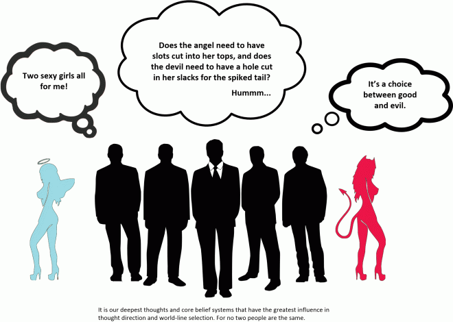
It is our deepest thoughts and core belief systems that have the greatest influence in thought direction and world-line selection. For no two people are the same.
This is a very important subject, and I will cover it later on.
For now, let’s look at things simply.
Consider that all thoughts are simple, unique and they can easily select the “frames” or world-lines that the consciousness will migrate to.
The actual “landscape” of the MWI as viewed by the individual consciousness.
Imagine a “road map” of nearby world-lines.
Now, what would it look like? What would it resemble? How would we be able to take into account all the different variables that are constantly shifting and changing all around us?
Obviously, it would have a form of sorts.
It would have (as an illustration) globes representing a given “world-line” (or “frame” in the movie using the analogy above). It would also have lines. The lines would represent a path of migration. Which is the most probable paths for a consciousness to take when moving from one world-line to another.
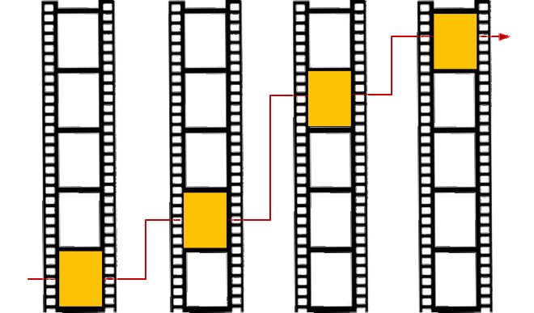
Movement in and out of the world-lines in the MWI by using the movie projector analogy to describe the way that consciousness moves in and out of different world-lines though thought.
.
Now, this is a pretty good analogy as far as it describes the path that a consciousness would take. However, this analogy ignores the world-lines that are not taken. And in general, there a millions or much larger numbers of world-lines that are constantly ignored.
So a better way of mapping this procedure is to do so in a three dimensional framework.
Moving away from the movie projector analogy and mapping it upon a three-dimensional grip, it might look something a little like this. With the positions of the world-lines geographically positioned relatively to the pathways as a function of the intrinsic value of the particular world-line.

The path that consciousness takes might be just as well placed on a map of sorts. This map might show nodes and paths where the consciousness might migrate depending on thought manifestation, generation and progression.
However, it would not look so much like a cluster of grapes, or bubbles on a foamy sea of bath water. No.
It turns out that the highest probability pathway forms a kind of sheet or flat surface when plotted in the three dimensions. If you end up plotting everything, you can't make out heads or tails of the map. It's just this one big mess. But, if you plot the pathways that have the greatest probability of travel, it simplifies immensely.
Instead of a cluster of grapes, it would look a little like a mesh or a grid. With the points being world-lines, and the lines connecting the points as the shortest distance to that world-line.
Now, if you take a step away from this “map” of “world-lines” and their lines of “high-probability” consciousness transfer it might start looking a little like this.
Where you would see a “surface” of “highest probability” pathways, with the relative ease of travel and the strength of character needed to traverse affecting the heights and valleys of the apparent surface.

How the world-lines with consciousness migration paths might look when a person takes a larger overview. You will see that the map is not a flat surface, but rather undulates.
.
It forms hills, valleys and “mountains”. This surface is the “geography” of the world-line transition map. Each possible destination world-line would have a different value of “potential”. Which is a potential for the consciousness to move towards it and occupy it.
.
The “surface” that this map forms is the HIGHEST PROBABILITY of consciousness movement from one world-line node to another.
- Going above the surface indicates a strength of will over the combined strength of inertia of a given world-line.
- Going below the surface indicates a weak strength of will and a consciousness being overwhelmed by the inherent inertia of a given world-line.
Additionally…
- Moving to the left upon the mapped surface indicates more freedom of movement upon a given world-line reality.
- Moving to the right upon the mapped surface indicates less freedom of movement upon a given world-line reality.
Thus…
The topographic map display is a useful tool in understanding the hurtles and trials that one needs to endure to travel forth on the MWI.
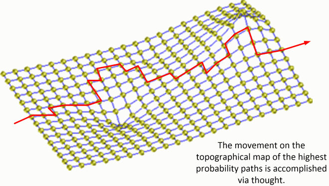
However, the rate of travel is fast…
The thing is, however, that the rate of travel through each world-line in the MWI is quite fast. It is around four world-lines per second. (For some people it is much, much higher.) Thus, for any topographic map to be of any use, it will have to have to exist on a much larger scale than what is presented here.
As such, the individual world-lines would appear as tiny pixels, and for the map to be of any use, it should describe a travel duration in terms of weeks rather than seconds. This means that the map would look like a smooth gradient rather than an array of “floating”globes.
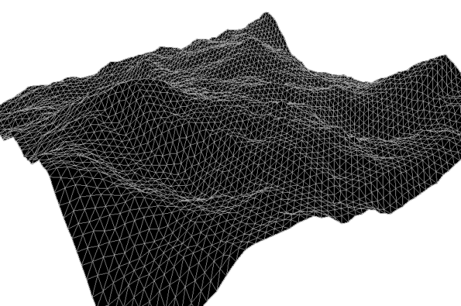
Mapping the surface.
Here, we are going to take a look at the way the landscape actually looks from the point of view of an individual consciousness. It is NOT simple and flat. It is undulating with all sorts of “nearby” world-lines that the thoughts can select and migrate towards.
In general, it might look something along these lines…
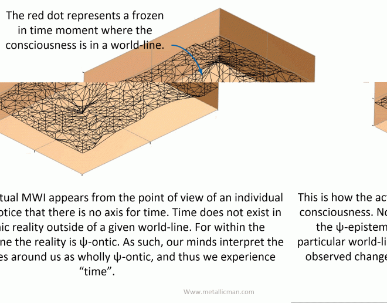
In reality, this topographical map is much more complex and complicated. However, I was able to (functionally) navigate it using a sort of simple 3d understanding, and that understanding is one that I will provide here. Yes, these are my conventions distilled and illustrated as a teaching aide.
Here we look at it is the substantially simplified version that I am accustomed to using.
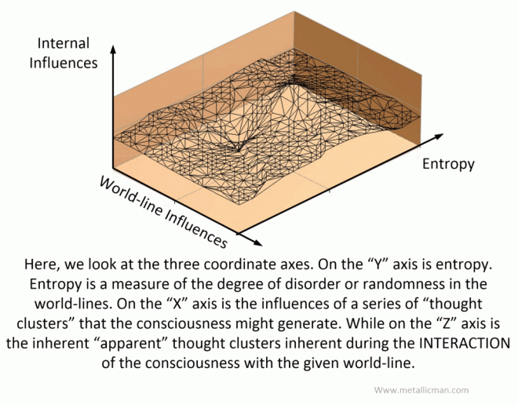
Now because this is a very simplified diagrammatic representation, numerous variables are incorporated in the “X’ and “Z” axes. (Not to mention the entropy axis “Y”.) In general, as I understand it, the characteristics of the “X’ and “Y” axes are an algebraic sum of the inverses of the individual contributions to the axes elements.
OK. I know that I lost you. Just think of it as a sum average of all your thoughts.
Internal Influences
Internal influences should be understood as the ultimate result of comparative thought-driven MWI transitions by the given consciousness.
Suppose the mind has a wide selection of thoughts. Everything from anger at a spouse, to frustration at work, and influences in the news, to a loving thoughts related to romance. All these thoughts will work together to generate a (singular) "value" on this axis. But, it is more than that. It is also the weighed value and the intensity of the thoughts, coupled with the apparent carry-over duration longevity of the thoughts as a person migrates in and through the other world-lines. Let's keep it simple. Look, if you drop a slice of pizza in the middle of a muddy road, would you [1] pick it up, wipe the mud off the pizza, and eat it. or [2] say "heck with that", and leave the pizza in the mud as a lost cause. For most people, they would give up and abandon the slice of pizza. The amount of mud is far too distracting to enjoy the slice of pizza. That is that way this system works. For if you abandon the slice, like most people would, your would occupy a world-line on the surface of the undulating map. If however, against all probability and convention, you decided to eat the slice, you might be above or below the surface, depending on other factors.
Here’s an example.
Let’s suppose that you are a simple fellow and you have five things going on in your life.
- A spouse that wants a divorce.
- A boss who is hinting on firing you.
- A yearning for a club sandwich and an ice cold beer.
- A pet that loves you and is very loyal.
- Memories of fishing with your father.
In this example, some of the items would have more emotion attached to it that others. While other issues might be better at controlling your emotions and directing your thoughts. While still others might be able to erase the thoughts completely (if for a short period of time).
You might be an emotional wreck and your thoughts would manifest a life that would reflect your thoughts.
As an aside, drugs and other stimuli can also influence thoughts and behaviors. All of these complexities can alter the navigational ability on the MWI.
There is no way to judge which thoughts or issues affecting the thoughts would have the greatest influence on the person because it is their deepest internal core belief systems that would result in how the world-lines would manifest.
All that one can assume is that all the factors would be weighted together and balanced though the core belief systems of the soul / consciousness. This would influence the momentary section of the next world-line.
Is it no wonder that when things start going wrong, that they often end up spiraling out of control?
- The Meltdown of Charlie Sheen
- Charlie Sheen’s Meltdown
- Charlie Sheen’s Public Meltdown in 2011
- Charlie Sheen blames ‘tiger blood’ meltdown
- Read Jon Cryer’s Painful Inside Account of Charlie Sheen’s meltdown
External Influences
External influences should be considered the inherent inertia that comes with a given world-line.
Inertia. Inertia is the resistance of any physical object to any change in its state. Once you have a bowling ball sitting on the floor, it is a little difficult to get it to move. However, once you get it moving, it's hard to slow down. That difficulty... getting it started to move, and stopping it from moving... is what is known as inertia.
For our purposes it is the accumulated influences of the “shadow thoughts” of those (non-consciousness) apparent beings that share a given destination world-line. These are all the physical and non-physical influences that would affect the thoughts of a consciousness while it is in a given world-line.
You see, there can only be one consciousness per world-line. All those other "people" that we share the world-line with are actually "shadows". They are the bodies and representation of other consciousness were they to share the reality with us. As such, not only are their physical being present with us, but also their thoughts, dreams, desires and urges as well. A "shadow" is a person that we share the specific world-line with. However no consciousness inhabits their body. Their actual consciousness is off in another reality. We are observing their 'shadow" or a portrayal of how they would behave, act and think were they to share our reality with us.
The arrow of time.
With this being understood, a consciousness… a person might experience world-line travel at a rate of around 4 Hz, and visit numerous world-lines in any given instance. Thus the “arrow of time” might look something like this…
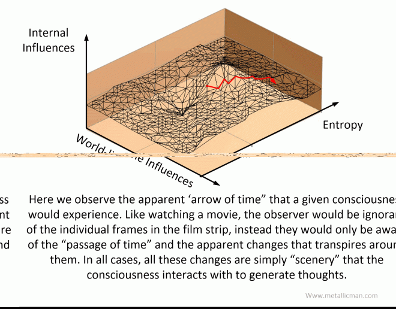
Thus in this simplified diagram showing the geography of the MWI you (the reader) can see [1] how the passage of time manifests, [2] how your thoughts can alter and change the “X” vector component, and [3] how a given world-line can influence the path direction via a “Z” axis vector. You will also notice that the “arrow of time” [4] moves along the direction of decreasing entropy.
Entropy A measure of the amount of disorder in a system. Entropy increases as the system's temperature increases. For example, when an ice cube melts and becomes liquid, the energy of the molecular bonds which formed the ice crystals is lost, and the arrangement of the water molecules is more random, or disordered, than it was in the ice cube. We can assume that in a macrocosmic universe, that it can be best represented as time.
The migration process.
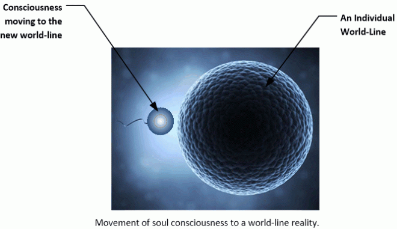
Our consciousness moves from one physical body in one world-line to another in a different world-line. For most humans, most of the time, the rate of travel is around four world-lines per second.
Expert hint; If you are using "the power of intention" to manifest your reality, what you are doing is focusing on a destination world line. If you track your success or failure in this effort, you will discover the amount of time it will take for your intentions to manifest. If it took 6 months, then that means that you had to pass through 62,208,000 (more or less) world lines to arrive at your destination world-line. Figure around 10 million world-line transitions per month.
The way that consciousness is able to move in and out of the various world lines is though wave propagation behavior.
- While it is a given world-line, the consciousness occupies the body in the particle form.
- While the consciousness moves from one world-line to another, it is no longer occupying a body. It is thus in a wave form.
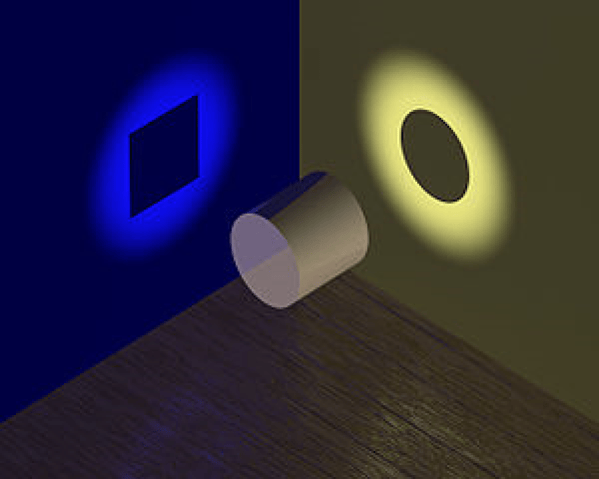
.
This all happens rather quickly. In most people, mostly the rate of travel from one world-line to another is around 4Hz. For most humans our brains have a difficult time observing the changes in these movements. So we think that we are living in one singular world-line that we share with others.
Here is a gif that kind of illustrates the point, and the system at work here.
The entry process
This is how the consciousness changes from wave to particle for entry within a body within a reality. Our consciousness naturally exists in the wave form.
However, the moment it “crashes through” into a fabricated world-line reality, it changes form. It becomes a particle. It’s a natural process.
MAJestic operations (slides and dives)
The thing is, if you are in MAjestic, and are engaged in the role like I was in, your visualization of the MWI mapping would be quite different. I was often not allowed, or permitted, to live a “normal” life per my capabilities. ‘
Instead I was often pulled off my life track and immersed within a completely different reality.
One of the reasons why it sucked to be me.
And this is what it was like.

For, by nature of my role, I would not follow the surface as described within the topography. I would be involved in slides and dives… including a few “deep dives”.
Thus, my dives and slides would deviate way off from the mapped surface geometry. It would render the understanding of this visualization quite differently.
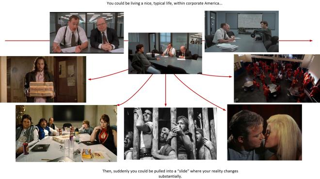
Clarification #1 – Consciousness cycles in and out of world-lines in a sinusoidal manner.
This should be obvious to the astute reader, but it needs to be stated.
The consciousness moves in and out of world-lines naturally. It moves in a sinusoidal manner. It moves in and out. In and out. Over and over.
The rate of travel varies from person to person, but typically averages around 4 Hz.
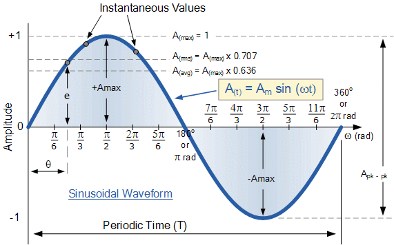
During this time it changes “shape properties”. Back and forth. Back and forth. Back and forth.
At “the top” of the cycle it takes on wave behavior.
At the “bottom” of the cycle, it takes on particle behavior.

When it takes on wave behavior it moves from one world-line to another directed by thought. It exists “in the spirit world”.

When it takes on particle behavior, it occupies a world-line and inhabits a physical body.

With this understood, we can define the amount of time that the transition from world-line to world-line takes, as well as the duration a consciousness spends inside each world-line.
If there are 4 cycles per second, then, each trip back and forth from the "Heavenly realms" to a world-line is 1/4 a second. And thus, (roughly) each moment at a given world-line is half of that. Or, 1/8 of a second.
Some “take aways”;
- Humans, via our consciousness, is continuously in touch with the “Heavenly realms”. Every moment we touch heaven, and enter our latest world-line.
- When in the wave form, we can perform all sorts of activities and have all sorts of “abilities” not tied to any world-line. There are no physical limitations. Humans spend approximately 50% of their time “connected” to the “Heavenly realms”.
- For us to maintain (retain) our memories from world-line to world-line, the memories are deposited outside the brain. It exists within the “Heavenly realms” not within the physical brain.
Key Correction #1 – Consciousness moves about the MWI when attached to a human body.
In my previous simplifications, I have referred to, and drawn the consciousness as a red blob; a point of light. I have stated that “Soul” can generate multiple Consciousnesses that it places on “journeys”. These “Journeys for experience” is a life-experience for a soul.

.
The Consciousness normally travels in and out of world-lines all a person’s life.
Once a consciousness uses up a body as it travels in and out of world-lines, it dies. The consciousness stays in the wave-form and “rests” within the “Heavenly realms”.
A decision is thus made by the soul, the consciousness, and their associations with other spirits, angels, and heavenly denizens on what to do next.
Often, it involves being injected on another “journey” in another life. This is often referred to as reincarnation.

Key Correction #2 – Consciousness is not a point-source.
Consciousness is actually quite complex and complicated.
It is not a blob, a dot, a “something”.
It’s a collection of “stuff” that operates in such a way that the soul, the consciousness, the MWI and the thoughts generate memories and navigate the life-path to create experiences that the soul can learn from.
Soul creates a “consciousness” that it uses to travel the MWI.
It inserts it into a given world-line, and allows it to move unencumbered and subject to it’s own thoughts. Each world-line is a “physical reality” that the consciousness occupies.
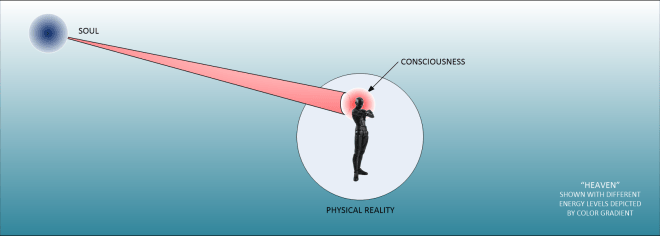
Now, in all of this, I drew consciousness (literately, and artistically) as a point. I drew it as a red circular blob. Like in the two earlier drawings.
As in the above drawing showing the consciousness as a red blob in front of a long tunnel to the soul.

However, the true reality is a bit different.
Get ready to have your mind blown.
The consciousness actually occupies multiple World-line-realities at any given moment simultaneously. It is actually not a “red blob”. It’s a lot of “red blobs”. Each one occupying a different world-line… simultaneously.
It is a “shared potential”. Some of the consciousness occupies one world-line at any given moment, while other aspects of it’s consciousness occupies other world-lines.
Sort of like this…

Then, they move on to the next group of world lines. Then again. Then again. Then again. Over and over.
It’s not a red blob moving in and out.

Instead, consciousness occupies numerous world-lines at any given moment. Each world-line is different, but similar. The Consciousness interprets the differences as a singular world-line.
Key Correction #2 – World-Lines are not point-sources either.
We have a tendency to think of a “world” as a fixed and solid place. And the way that I have described the movement of time, has been the consciousness moving in and out from these fixed world-line realities.
A "world-line" is the resultant combined perception of a moment "frozen in time" that combines multiple world-lines into a singular apparent place.
What we think a world-line is is not a fixed singular place.
It is the sum total average of all the experiences that a conscientiousness is exposed to at any singular moment in time.

It is the exact opposite of “living within an echo chamber“. It enables the consciousness to experience different experiences instead of simply reinforcing existing ones that the consciousness has been accustomed to over the years.
Key Correction #3 – World-Lines are not entirely empty of other consciousnesses.
To best understand how you can move in and out of multiple world-lines, it makes sense to think of things simply. Your consciousness is a point or sphere. The world-lines are empty and only occupied by “shadow consciousnesses”. But that’s really a simplistic picture.
It’s a simple narrative.
Imagine that you are only consciousness. And that you can move in and out of different world-lines freely. They seem to be occupied by all kinds of other people, but that is just an illusion. Most world-lines are just empty. And all those other people are just “quantum shadows” of others.
Now, this simplistic narrative needs to be revised to reflect the reality.
Instead of 100% of a consciousness entering a world-line where all the “quantum shadows” only have 0% occupancy within that reality…
…we now look at the reality…
Your consciousness might devote (say) 23% occupation within a given world-line, and all those “quantum-shadows” are actually occupied by other consciousnesses. Only they are a much smaller percentage. Often varying from 0.0002% to 0.1%.
Thus, in truth, all world-lines are not truly empty. They are occupied to some extent. And all of the other consciousnesses react to the way your consciousness behaves within any given particular world line.
Quick Review
Before we need to go further, please note the summary of state regarding the universe. Originally found here…
- Depending on the scale of consideration, we have a threshold of consciousness.
- Consciousness can not exist below that threshold.
- Consciousness generates thoughts.
- Below the consciousness threshold is a universe that is independent of thought.
- Above the consciousness threshold we have a reality that is ruled by thought.
Finally,
- We exist within two (x2) universes simultaneously. One is the reality that our consciousness inhabits, and the other is the realm where our soul exists.
- One universe is ruled by thought and the other is not.
Additionally,
- The ψ is a measure of how thought alters our reality.
- Heaven is ψ-ontic.
- Our reality is ψ -epistemic.
- Tests seem to confirm this.
Putting Everything Together
The sum totality of everything is ψ-ontic. It contains a number of “Heaven(s)”. Souls, which are self-aware clusters of quanta in the form of garbons, create ψ -epistemic “bubbles” of reality, and place consciousnesses there to obtain experiences.
- Experiences plus thoughts create sentience.
- Sentience is a building block that establishes garbon formation.
- Garbon formation, configuration and utilization is how souls grow, advance and move toward the divine.
As consciousness moves about within the ψ -epistemic “bubbles” of reality, thoughts are created and action occurs. The very nature of this CHANGES the “bubble” of reality. We view this change as gradual. We call this the “passage of time”.
However,
Our reality is often changed by huge events, actions and decisions from significant sources. Not just adjacent trivialities such as thought and intent. When this happens, the reality is jolted and more radical change occurs.
Take Aways
- Every person lives within his or her own reality.
- Realities are constructs of the soul.
- Realities are drawn from a Universal Template.
- Consciousness is a bridge between the soul and experiences in the reality.
- Souls consist of organized quantum strings that have obtained sentience.
- With the skill of intention, a person can tweak their reality.
- With the utilization of technology, one can alter their reality substantially.
And now with this basic introduction of some of the key elements of our understanding of the nature of how everything works, let’s see what the “Scientists” have to say…
A quantum experiment suggests there’s no such thing as objective reality
Physicists have long suspected that quantum mechanics allows two observers to experience different, conflicting realities. Now they’ve performed the first experiment that proves it.
Back in 1961, the Nobel Prize–winning physicist Eugene Wigner outlined a thought experiment that demonstrated one of the lesser-known paradoxes of quantum mechanics. The experiment shows how the strange nature of the universe allows two observers—say, Wigner and Wigner’s friend—to experience different realities.
Since then, physicists have used the “Wigner’s Friend” thought experiment to explore the nature of measurement and to argue over whether objective facts can exist. That’s important because scientists carry out experiments to establish objective facts. But if they experience different realities, the argument goes, how can they agree on what these facts might be?
That’s provided some entertaining fodder for after-dinner conversation, but Wigner’s thought experiment has never been more than that—just a thought experiment.
Last year, however, physicists noticed that recent advances in quantum technologies have made it possible to reproduce the Wigner’s Friend test in a real experiment. In other words, it ought to be possible to create different realities and compare them in the lab to find out whether they can be reconciled.
And today, Massimiliano Proietti at Heriot-Watt University in Edinburgh and a few colleagues say they have performed this experiment for the first time: they have created different realities and compared them. Their conclusion is that Wigner was correct—these realities can be made irreconcilable so that it is impossible to agree on objective facts about an experiment.
Wigner’s original thought experiment is straightforward in principle. It begins with a single polarized photon that, when measured, can have either a horizontal polarization or a vertical polarization. But before the measurement, according to the laws of quantum mechanics, the photon exists in both polarization states at the same time—a so-called superposition.
Wigner imagined a friend in a different lab measuring the state of this photon and storing the result, while Wigner observed from afar. Wigner has no information about his friend’s measurement and so is forced to assume that the photon and the measurement of it are in a superposition of all possible outcomes of the experiment.
Wigner can even perform an experiment to determine whether this superposition exists or not. This is a kind of interference experiment showing that the photon and the measurement are indeed in a superposition.
From Wigner’s point of view, this is a “fact”—the superposition exists. And this fact suggests that a measurement cannot have taken place.
But this is in stark contrast to the point of view of the friend, who has indeed measured the photon’s polarization and recorded it. The friend can even call Wigner and say the measurement has been done (provided the outcome is not revealed).
So the two realities are at odds with each other. “This calls into question the objective status of the facts established by the two observers,” say Proietti and co.
That’s the theory, but last year Caslav Brukner, at the University of Vienna in Austria, came up with a way to re-create the Wigner’s Friend experiment in the lab by means of techniques involving the entanglement of many particles at the same time.
The breakthrough that Proietti and co have made is to carry this out. “In a state-of-the-art 6-photon experiment, we realize this extended Wigner’s friend scenario,” they say.
They use these six entangled photons to create two alternate realities—one representing Wigner and one representing Wigner’s friend. Wigner’s friend measures the polarization of a photon and stores the result. Wigner then performs an interference measurement to determine if the measurement and the photon are in a superposition.
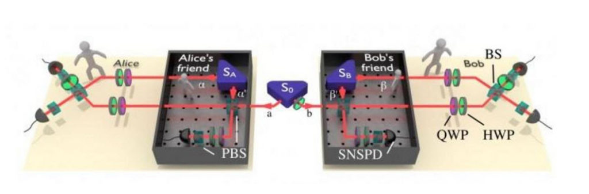
The experiment produces an unambiguous result. It turns out that both realities can coexist even though they produce irreconcilable outcomes, just as Wigner predicted.
That raises some fascinating questions that are forcing physicists to reconsider the nature of reality.
The idea that observers can ultimately reconcile their measurements of some kind of fundamental reality is based on several assumptions. The first is that universal facts actually exist and that observers can agree on them.
But there are other assumptions too. One is that observers have the freedom to make whatever observations they want. And another is that the choices one observer makes do not influence the choices other observers make—an assumption that physicists call locality.
If there is an objective reality that everyone can agree on, then these assumptions all hold.
But Proietti and co’s result suggests that objective reality does not exist. In other words, the experiment suggests that one or more of the assumptions—the idea that there is a reality we can agree on, the idea that we have freedom of choice, or the idea of locality—must be wrong.
Of course, there is another way out for those hanging on to the conventional view of reality. This is that there is some other loophole that the experimenters have overlooked. Indeed, physicists have tried to close loopholes in similar experiments for years, although they concede that it may never be possible to close them all.
Nevertheless, the work has important implications for the work of scientists. “The scientific method relies on facts, established through repeated measurements and agreed upon universally, independently of who observed them,” say Proietti and co. And yet in the same paper, they undermine this idea, perhaps fatally.
The next step is to go further: to construct experiments creating increasingly bizarre alternate realities that cannot be reconciled. Where this will take us is anybody’s guess. But Wigner, and his friend, would surely not be surprised.
Ref: arxiv.org/abs/1902.05080 : Experimental Rejection of Observer-Independence in the Quantum World